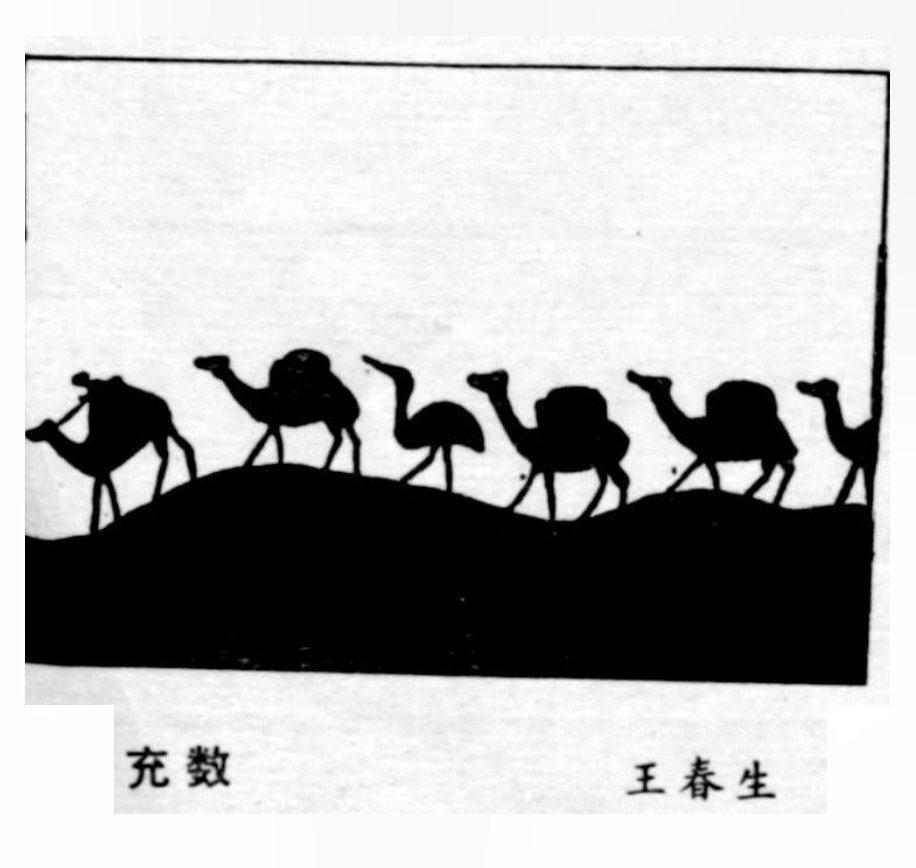

王春生 《人事》1989年第9期（总第48期），封三
充数
Making Up the Numbers
- Description
- A silhouetted camel caravan crosses a dune — and one of the animals keeping step in the line is an ostrich.
- Note
- 充数 recalls 滥竽充数, the fable of Mr Nanguo who faked his way into a royal orchestra: someone unqualified filling a place in the ranks.
- Artist
- Wang Chunsheng 王春生
- Published in
- 《人事》1989年第9期（总第48期）, inside back cover
- Themes
- Talent and its neglect · Fable, legend and history

Cite
Wang Chunsheng, “充数” [Making Up the Numbers], Renshi (Personnel) 《人事》, 1989, no. 9, inside back cover.